两米小路与低护栏
混凝土露骨料路面保留2m净宽，两侧是种植带和低矮压顶石栏；抬高榕树气根下端，收拢贴地根部，留出通行空间。


展开实拍 / 用户标注

2026-10-04 · 以下为浏览器实际渲染的同机位修改前后对比。点击图片可放大。
楼板局部开楼梯井，房间墙避让双跑楼梯；取消短横杆，补左端内侧封闭墙和玻璃。
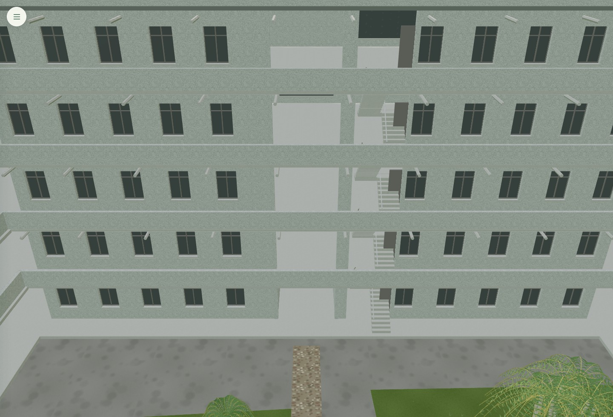
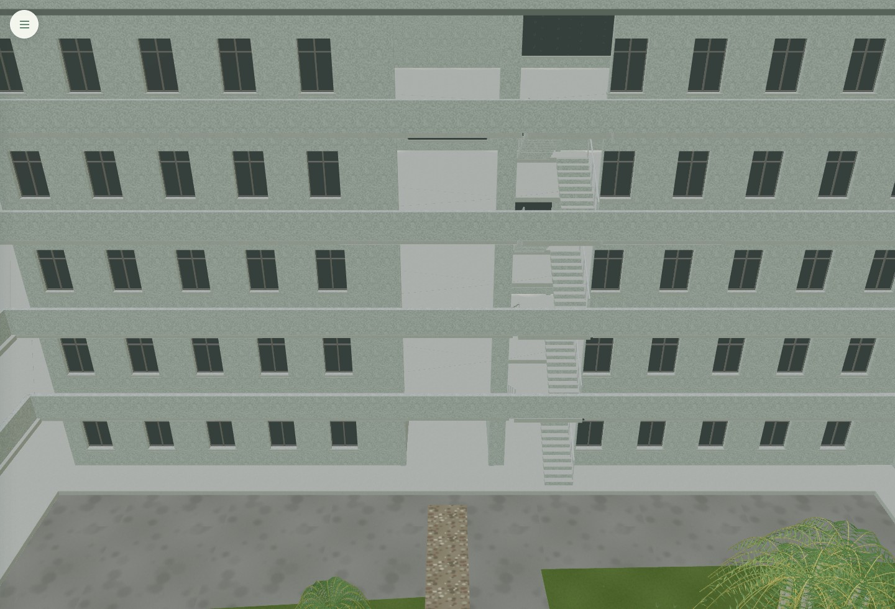
每层22级双跑楼梯、休息平台和栏杆连续；去掉挡住楼梯的门板。
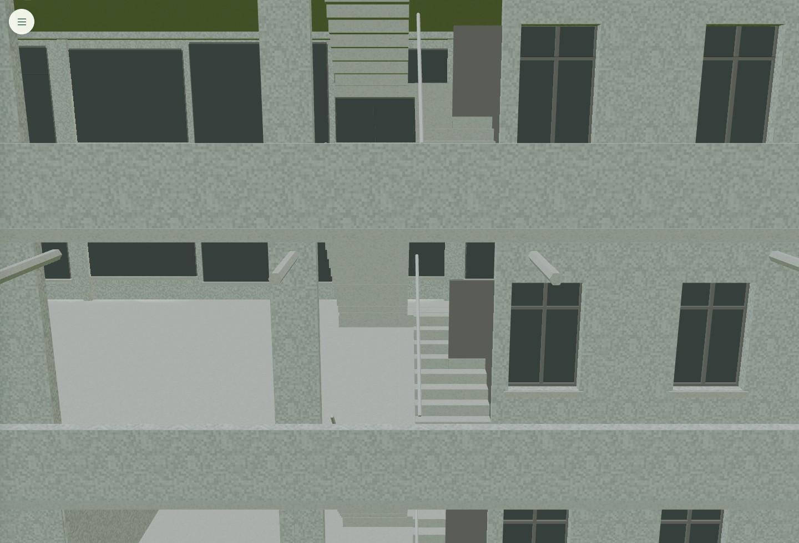
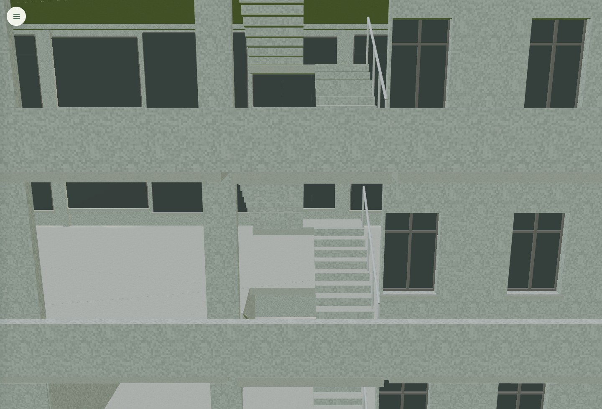
正面、外端面和穿孔屏风的58,660个受保护三角面逐项保持一致。
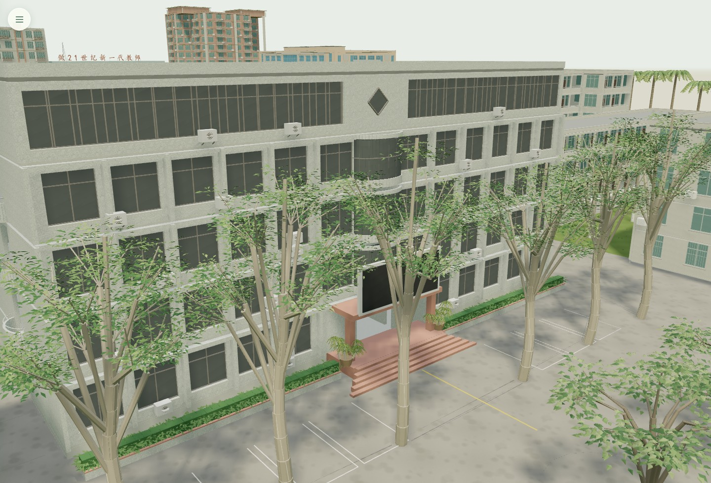
保留两端规划位置，补L形围护与连续顶盖；原小卖部立面和宿舍上层保留。
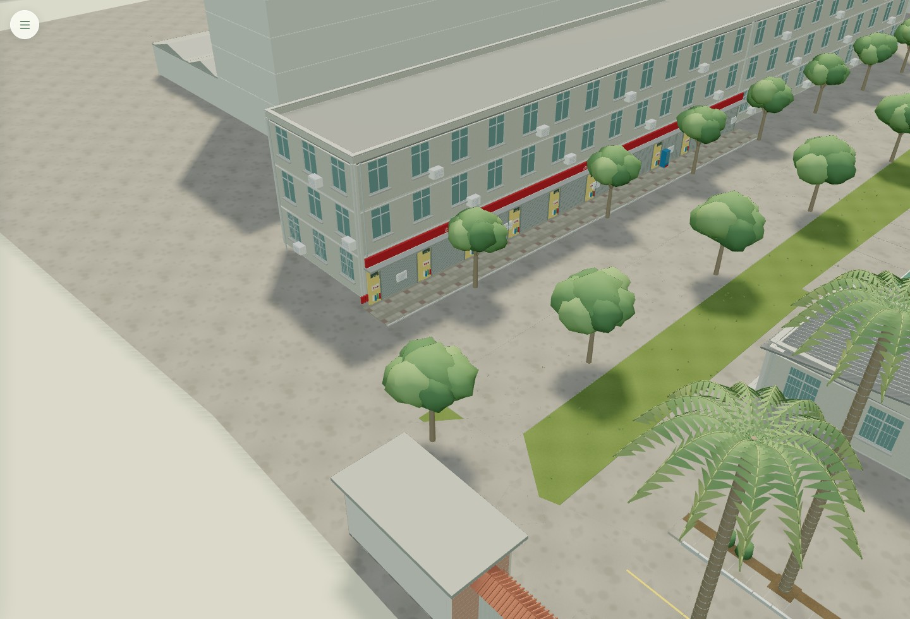
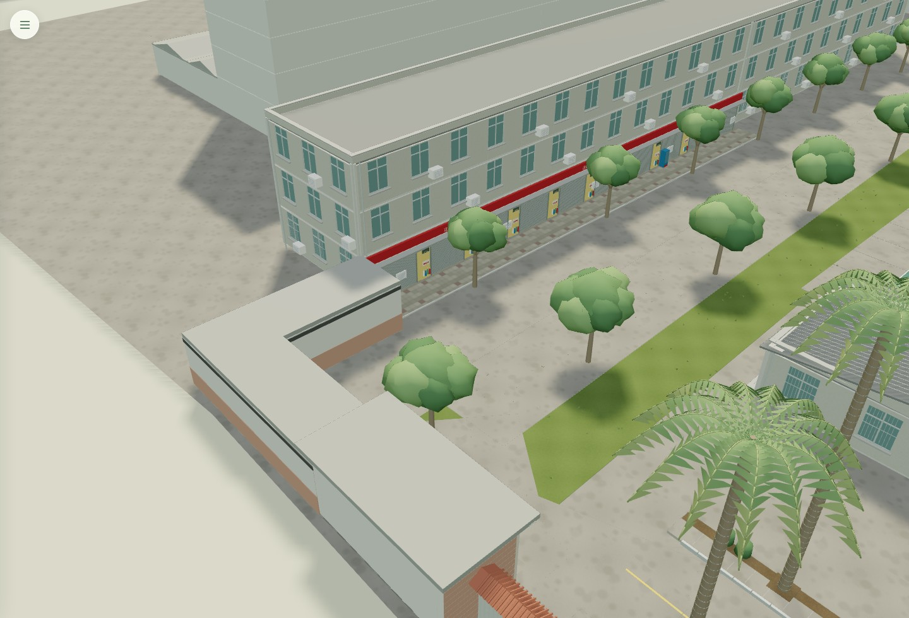
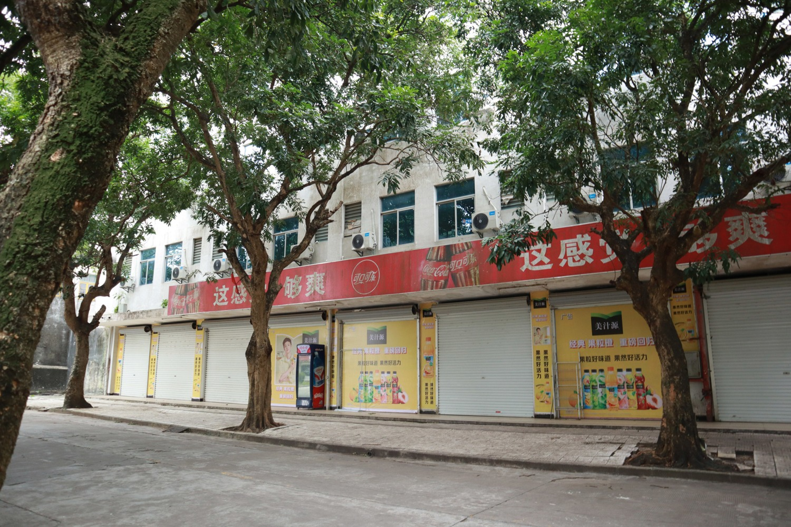
由7.2×3.2m等比放大25%至约9×4m，屋顶约4.79m；入口继续位于宣传栏末端。照片12×6格按约0.75m模数估算，约±15%，不是实测。
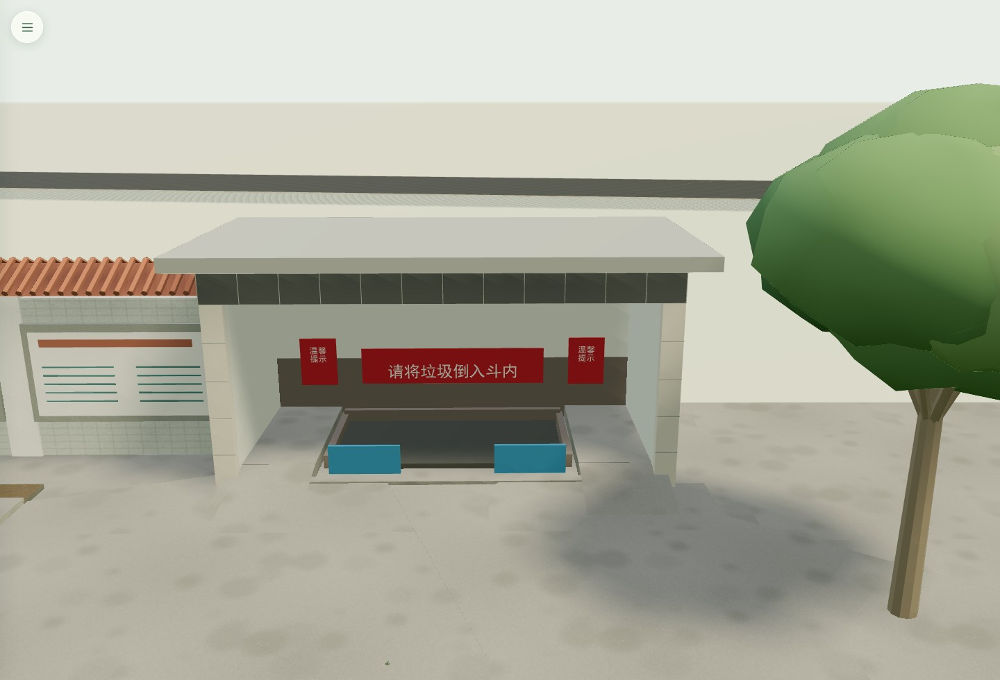
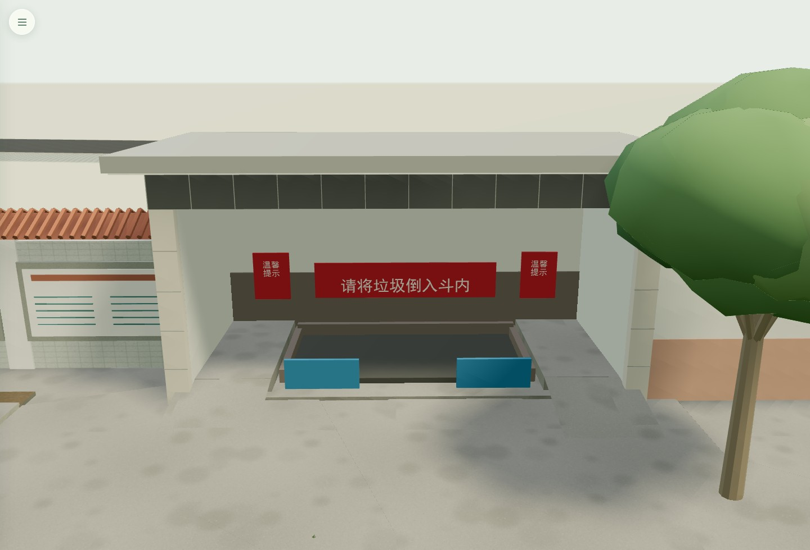
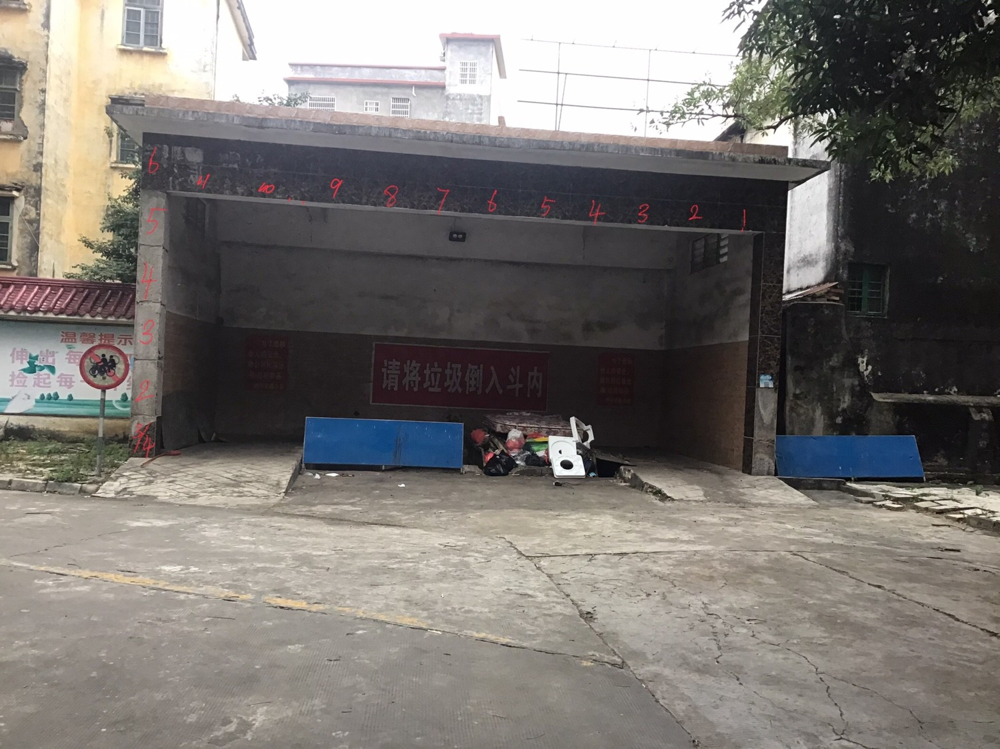
报刊亭移至宿舍西侧端部；两块题石整体移到对面实验楼南侧通道旁，保留原刻字。
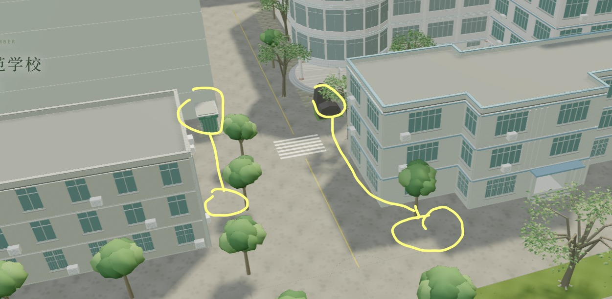
低矮叶片、杂草、白花和铺地边覆盖石旁；3.5m通道和入口台阶留空。
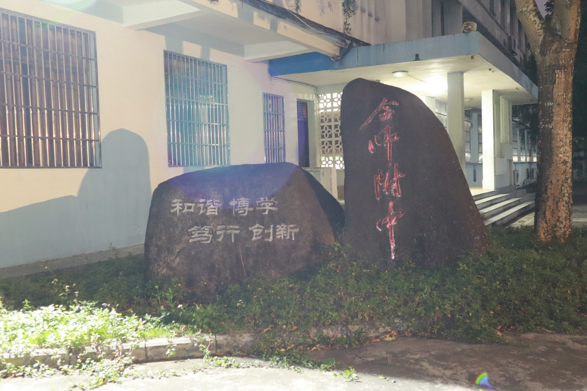
12株斜干柳树移到通往东坡亭的一端；4株原东坡树退入种植带，树根落在土岸上。
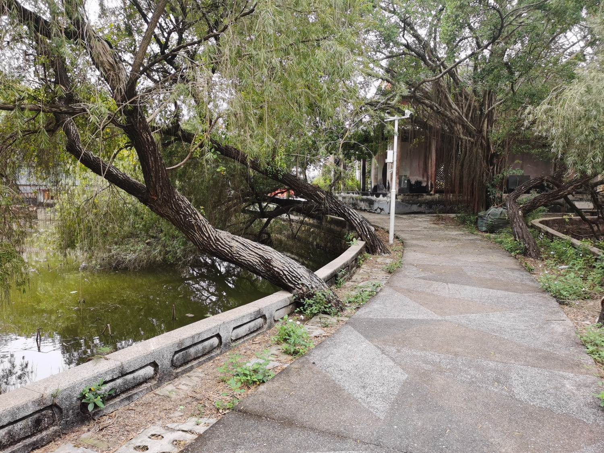
混凝土露骨料路面保留2m净宽，两侧是种植带和低矮压顶石栏；抬高榕树气根下端，收拢贴地根部，留出通行空间。
移除旧斜向土带、旧护岸、接缝和残留路面；入口改从亭东侧接入，低栏在交汇处断开。亭旁两株柳树补连续土岸。
采用规划图第1页的已注册坐标；小路按北段—斜段—南段—前庭连接。水体和荷花同时扣除路岸及根部种植地。
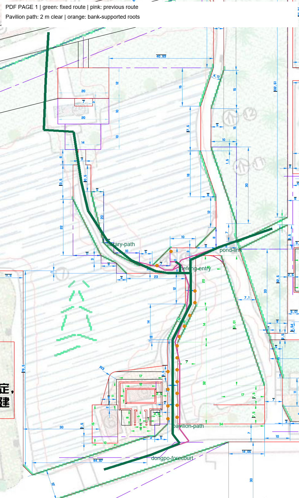
绿色：固定路线；粉色：上一版路线；橙点：本轮迁移的树根。第2页图像相对第1页有平移，因此此处统一使用第1页坐标。
86个无关网格保持原样；332条无关植物记录保持原样。校园仍有58个建筑、350株植物、27条道路。11个最终视角无浏览器运行错误；25项专项检查通过。编辑器重建道路也保留本轮连续窄路和低护栏。